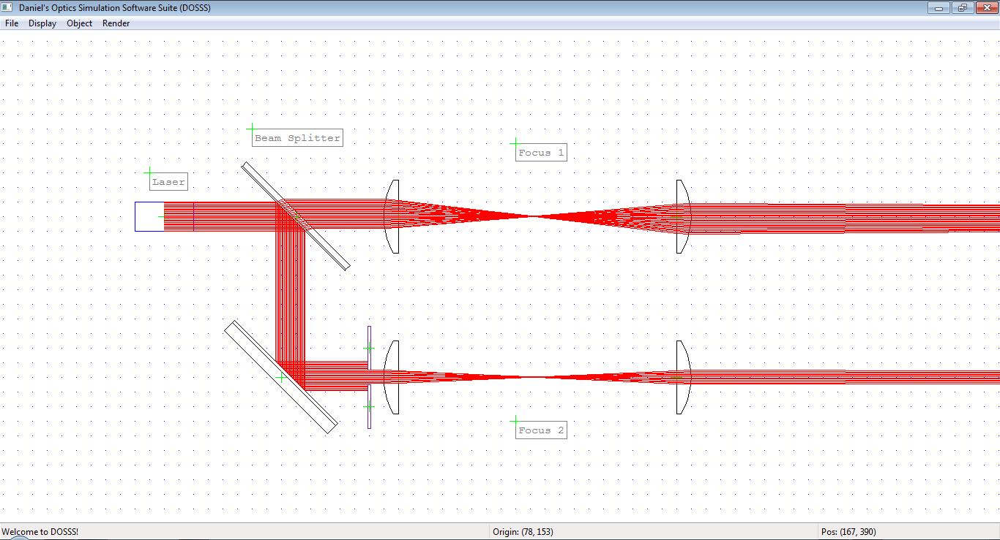

Using DOSSS¶
The Main Window¶
DOSSS uses only a single window with a menu bar, client area and status bar. All the scene manipulation, rendering and display takes place in the client window. You can use the mouse and/or keyboard to manipulate and place objects.
{kind=link}
Mouse Commands¶
- LEFT CLICK on object
- Select object.
- LEFT DCLICK on object
- Open property dialog box.
- LEFT CLICK and MOVE on object
- Translate object.
- RIGHT CLICK and MOVE
- Move visible part of scene.
Keyboard Commands¶
- F5
- Render the scene.
- DEL with object selected
- Delete the object. Be careful, there is no UNDO function yet.
- CTRL-C with object selected
- Clone currently selected object.
- CTRL-S
- Save current scene.
- PGUP, PGDN with object selected
- Move selected object one step forwards / backwards. The z-order controls which objects appear on top of others.
- UP, DOWN, LEFT, RIGHT with object selected
- Translate selected object one unit / one grid spacing upwards, downwards, to the left, or to the right.